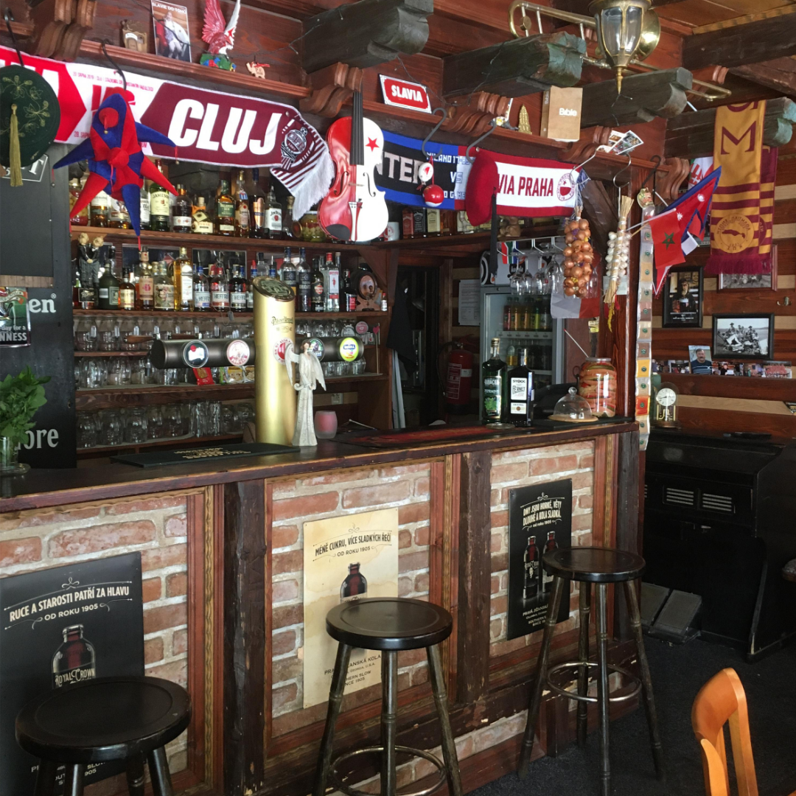

Středočeská Příbram zažila noc, na kterou jen tak nezapomene. Vše začalo jako běžný večer v zaplněném podniku, dokud jeden z hostů nevypustil z úst větu: „Dáme jen jedno.“ Zatímco v jiných koutech světa by se nad tím nikdo nepozastavil, v srdci českého pohostinství tato slova vyvolala okamžitou vlnu paniky. Svědci popisují, že v lokále na moment utichl veškerý hovor a i cinkot půllitrů ustal. Situace eskalovala ve chvíli, kdy dotyčný po dopití prvního piva skutečně zaplatil a odešel domů, čímž porušil nepsaný zákon „to druhý se pije na druhou nohu“.
Místní policie potvrdila, že situaci nadále monitoruje, aby se předešlo šíření podobně extremistických názorů mezi další obyvatele. Psychologové varují, že takto zodpovědný přístup k alkoholu může mít devastující vliv na sociální dynamiku celého regionu. „Pokud by lidé začali své sliby o 'jednom kousku' plnit masově, hrozí kolaps hospodské kultury, jak ji známe,“ uvedl expert na lokální folklor. Obyvatelé jsou vyzýváni k zachování klidu a k preventivní návštěvě nejbližšího výčepu, aby se ujistili, že je svět ještě v pořádku.